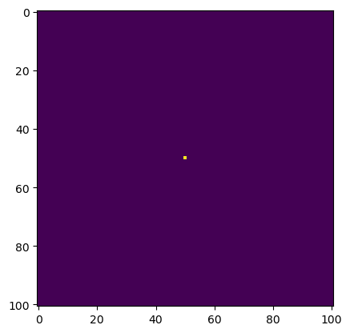
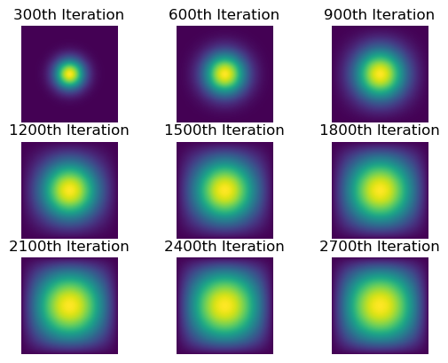

# create arrays to model the diffusion process
import numpy as np
# visualize the arrays that are created
from matplotlib import pyplot as plt
# optimize the code, significantly decreasing run time
import jax
from jax.experimental import sparse
from jax import jit
import jax.numpy as jnp
# display the code for functions created in a seperate .py file
import inspectThis blog post will outline my completion of PIC 16B Homework 4. I will describe my modeling of a two-dimensional heat diffusion using four different methods.
- First, we import all packages necessary to complete the diffusion models.
- We will now set some global parameters for the diffusion model.
- N is the width and height of the grid that the model will be displayed on.
- epsilon is a small parameter that represents a time step in the discretized process.
N = 101
epsilon = 0.2- The diffusion model will begin with an initial numpy array containing heat centralized in the array.
- The creation of this array is given in the function below along with a depiction of the initial state of the diffusion model.
def create_u0(N):
'''
Creates the initial array in our two-dimensional heat diffusion model.
Args:
N: an integer of how large the array should be
Returns:
u0: a N x N numpy array to represent the start of a 2D heat diffusion
'''
u0 = np.zeros((N, N))
u0[int(N/2), int(N/2)] = 1.0
return u0
plt.imshow(create_u0(N))
- After creating the initial array, we want to model the diffusion through many (2700) time steps.
- We also want to save every 300 steps of the process to visualize the differences as the heat diffusion progresses.
- The function that will allow us to advance the simulation by 2700 steps is shown below.
def advance_2700(advance_fun, u0, **kwargs):
'''
Advances the heat diffusion process by 2700 steps, saving every 300 steps.
Args:
advance_fun: a function that will advance the diffusion process by 1 step
u0: a N x N numpy array that represents that start of the diffusion
**kwargs: additional arguments needed for the advance_fun function
Returns:
a list of the numpy array generated at every 300th step of the diffusion
'''
output = []
# for numbers 1 to 2700
for i in range(1, 2701):
# advance the simulation by one step
u0 = advance_fun(u = u0, **kwargs)
# if we are in one of the 300th steps
if i % 300 == 0:
# save the output in a list and print a message
output.append(u0)
print(f"u{i} created")
return output- Now that we have a way to model 2700 diffusion steps, we want a way to visualize every 300th step of the process.
- The function that accomplishes this is shown below.
def plot_every_300(u_list):
'''
Outputs a 3 by 3 visualization that shows every 300th step of a modeled
diffusion process with 2700 steps.
Args:
u_list: a list created by the advance_2700 function that contains every
300th step of the modeled diffusion process
Returns:
3 by 3 visualization that shows every 300th step of the modeled diffusion
'''
# create the figure
fig = plt.figure()
# for numbers 1 to 10
for i in range(1, 10):
# add a subplot and display the (i*300)th step
fig.add_subplot(3, 3, i)
plt.imshow(u_list[i-1])
plt.axis("off")
plt.title(f"{i*300}th Iteration")- Now that we have a way to advance our simulation and plot our results, we will experiment with different advance_fun functions using different processes.
Part 1: Matrix Multiplication
- We will first attempt to model the two-dimensional diffusion using matrix multiplication.
- This process is outlined in the advance_time_matvecmul function, shown below.
- This function multiplies the array u by a finite difference matrix A specified by the user.
from heat_equation import advance_time_matvecmul
print(inspect.getsource(advance_time_matvecmul))def advance_time_matvecmul(A, u, epsilon):
"""
Advances the simulation by one timestep, via matrix-vector multiplication
Args:
A: The 2d finite difference matrix
u: N x N grid state at timestep k
epsilon: stability constant
Returns:
N x N Grid state at timestep k+1
"""
# use matrix-vector multiplication of A and u
return u + epsilon * (A @ u.flatten()).reshape((u.shape[0], u.shape[0]))
- We now have a process to model the diffusion, but we do not know what the matrix A is.
- The N^2 by N^2 matrix A that satisfies the diffusion equations is created using the below function.
from heat_equation import get_A
print(inspect.getsource(get_A))def get_A(N):
'''
Creates a matrix of size N^2 by N^2 without all-zero rows or all-zero columns.
Args:
N: the square root of the dimension of the matrix outputted
Returns:
N^2 x N^2 matrix
'''
n = N * N
# make the diagonals of the A matrix
diagonals=[-4 * np.ones(n), np.ones(n-1), np.ones(n-1), np.ones(n-N), np.ones(n-N)]
# set some of the first diagonals to 0
diagonals[1][(N-1)::N] = 0
# set some of the second diagonals to 0
diagonals[2][(N-1)::N] = 0
# combine the above diagonals to create the matrix
return np.diag(diagonals[0]) + np.diag(diagonals[1], 1) + np.diag(diagonals[2], -1) + np.diag(diagonals[3], N) + np.diag(diagonals[4], -N)
- We will now begin our simulation by creating A and u0 to be passed into the advance_time_matvecmul function, as shown below.
A = get_A(N)
u0 = create_u0(N)- We will now advance our simulation by 2700 steps, tracking the amount of time that the advance_time_matvecmul function takes to run 2700 times. The list u_list1 will store every 300th step of this process.
%%time
u_list1 = advance_2700(advance_fun = advance_time_matvecmul,
u0 = u0,
A = A,
epsilon = epsilon)u300 created
u600 created
u900 created
u1200 created
u1500 created
u1800 created
u2100 created
u2400 created
u2700 created
CPU times: user 2min 47s, sys: 3.46 s, total: 2min 51s
Wall time: 30.5 s- As shown above, this process takes 30.5 seconds, which is certainly not ideal. If we wanted to run the simulation for a larger amount of steps, this would get progressively more problematic.
- We will now visualize the results to our simulation.
plot_every_300(u_list1)- The above visualization looks great. It clearly shows the heat spreading out slowly over time, which is what is expected.
Part 2: Sparse Matrix in JAX
- We will now attempt to model the two-dimensional diffusion using matrix multiplication with the sparse matrix in JAX. This should be faster than the matrix multiplication used in part 1.
- To start this process, we must be able to create a JAX sparse matrix that will replace the matrix A in the advance_time_matvecmul function. The creation of this matrix is outlined below.
from heat_equation import get_sparse_A
print(inspect.getsource(get_sparse_A))def get_sparse_A(N):
'''
Creates a sparse matrix of size N^2 by N^2 without all-zero rows or columns.
Args:
N: the square root of the dimension of the matrix outputted
Returns:
a sparse N^2 x N^2 matrix
'''
# run the BCOO.fromdense function on the A matrix
return sparse.BCOO.fromdense(get_A(N))
- We now will create a sparse matrix A that will be used in the advance_time_matvecmul function.
- We also reset the u0 array to restart the simulation.
A_sparse = get_sparse_A(N)
u0 = create_u0(N)- In order to further optimize the process, we will use jax to “jit” the advance_time_matvecmul function, allowing the function to use just-in-time compilation.
advance_time_matvecmul_jit = jit(advance_time_matvecmul)- We will now advance our simulation by 2700 steps, tracking the amount of time that the advance_time_matvecmul_jit function using the sparse A matrix takes to run 2700 times. The list u_list2 will store every 300th step of this process.
%%time
u_list2 = advance_2700(advance_fun = advance_time_matvecmul_jit,
u0 = u0,
A = A_sparse,
epsilon = epsilon)u300 created
u600 created
u900 created
u1200 created
u1500 created
u1800 created
u2100 created
u2400 created
u2700 created
CPU times: user 957 ms, sys: 28.2 ms, total: 985 ms
Wall time: 984 ms- As shown above, this process takes 0.984 seconds, which is much better than the process in part 1. In fact, it is about 31 times faster than part 1.
- We will now visualize the results to our simulation.
plot_every_300(u_list2)
- The above visualization looks the exact same as the visualization in part 1, which is as expected.
Part 3: Direct Operation with Numpy
- We will now attempt to model the two-dimensional diffusion using direct operations in numpy. This should be faster than both of the parts above because it will not involve any large matrix multiplication.
- This process is outlined in the advance_time_numpy function shown below. This function updates the u array using only the previous values of u and epsilon.
- The function is a direct computation of the diffusion equations.
from heat_equation import advance_time_numpy
print(inspect.getsource(advance_time_numpy))def advance_time_numpy(u, epsilon):
'''
Advances the simulation by one timestep, using numpy to compute the discrete heat
diffusion update formula.
Args:
u: N x N grid state at timestep k
epsilon: stability constant
Returns:
N x N Grid state at timestep k+1
'''
# pad u with rows/comluns of 0s
u = np.pad(u, pad_width = 1, constant_values = 0)
# shift the u array one to the right
u1 = np.roll(u, shift=1, axis=0)
# shift the u array one to the left
u2 = np.roll(u, shift=-1, axis=0)
# shift the u array one to the top
u3 = np.roll(u, shift=1, axis=1)
# shift the u array one to the bottom
u4 = np.roll(u, shift=-1, axis=1)
# execute the heat difusion equation
u = u + epsilon * (u1 + u2 + u3 + u4 - 4*u)
# return the updated matrix with the padding removed
return u[1:-1,1:-1]
- Again, we must reset the u0 vector before running the simulation.
u0 = create_u0(N)- We will now advance our simulation by 2700 steps, tracking the amount of time that the advance_time_numpy function takes to run 2700 times. The list u_list3 will store every 300th step of this process.
%%time
u_list3 = advance_2700(advance_fun = advance_time_numpy,
u0 = u0,
epsilon = epsilon)u300 created
u600 created
u900 created
u1200 created
u1500 created
u1800 created
u2100 created
u2400 created
u2700 created
CPU times: user 223 ms, sys: 4.92 ms, total: 228 ms
Wall time: 231 ms- As shown above, this process takes 0.231 seconds, which is much better than the processes in both part 1 and part 2. In fact, it is about 132 times faster than part 1.
- We will now visualize the results to our simulation.
plot_every_300(u_list3)- The above visualization looks the exact same as the visualizations in part 1 and part 2, which is as expected.
Part 4: Direct Operation with JAX
- We will now attempt to model the two-dimensional diffusion using direct operations in JAX. This should be faster than all of the parts above because it will not involve any large matrix multiplication and will use just-in-time compilation.
- This process is outlined in the advance_time_jax function shown below. This function updates the u array using only the previous values of u and epsilon. It is almost identical to the advance_time_numpy function, but it uses jax numpy and just-in-time compilation.
from heat_equation import advance_time_jax
print(inspect.getsource(advance_time_jax))@jax.jit # specify the usage of just-in-time compilation
def advance_time_jax(u, epsilon):
'''
Advances the simulation by one timestep, using jax to more quickly compute the
discrete heat diffusion update formula.
Args:
u: N x N grid state at timestep k
epsilon: stability constant
Returns:
N x N Grid state at timestep k+1
'''
# pad u with rows/comluns of 0s
u = jnp.pad(u, pad_width = 1, constant_values = 0)
# shift the u array one to the right
u1 = jnp.roll(u, shift = 1, axis = 0)
# shift the u array one to the left
u2 = jnp.roll(u, shift = -1, axis = 0)
# shift the u array one to the top
u3 = jnp.roll(u, shift = 1, axis = 1)
# shift the u array one to the bottom
u4 = jnp.roll(u, shift = -1, axis = 1)
# execute the heat difusion equation
u = u + epsilon * (u1 + u2 + u3 + u4 - 4*u)
# return the updated matrix with the padding removed
return u[1:-1, 1:-1]
- Just like before, we must reset the u0 vector before running the simulation.
u0 = create_u0(N)- We will now advance our simulation by 2700 steps, tracking the amount of time that the advance_time_jax function takes to run 2700 times. The list u_list4 will store every 300th step of this process.
%%time
u_list4 = []
for i in range(1, 2701):
u0 = advance_time_jax(u0, epsilon)
if i % 300 == 0:
u_list4.append(u0)
print(f"Created u{i}")Created u300
Created u600
Created u900
Created u1200
Created u1500
Created u1800
Created u2100
Created u2400
Created u2700
CPU times: user 78.1 ms, sys: 4.02 ms, total: 82.1 ms
Wall time: 82 ms- As shown above, this process takes 0.082 seconds, which is much better than the processes in part 1, part 2, and part 3. In fact, it is about 2.8 times better than part 3.
- We will now visualize the results to our simulation.
plot_every_300(u_list4)- The above visualization looks the exact same as the visualizations in part 1, part 2, and part 3, which is as expected.
Part 5: Methods Comparison
Speed:
- Part 1: 30.5 seconds
- Part 2: 0.984 seconds
- Part 3: 0.231 seconds
- Part 4: 0.082 seconds
- Part 2 is about 31 times faster than part 1.
- Part 3 is about 132 times faster than part 1 and about 4.3 times faster than part 2.
- Part 4 is about 372 times faster than part 1, about 12 times faster than part 3, and about 2.8 times faster than part 3.
- In conclusion, part 4 is significantly preferred from a speed standpoint.
Ease of Coding:
- Part 1: This part is the hardest to code because it involves two functions and matrix multiplication.
- Part 2: This part was equally hard as part 1 to code because it also involves 2 functions and matrix multiplication.
- Part 3: This part was much easier than parts 1 and 2 to code because it was just following along with the heat diffusion equation.
- Part 4: This part was equally as difficult as part 3 to code because the logic was the exact same.
- In conclusion, the functions that ran to fastest were actually much easier in terms of coding.